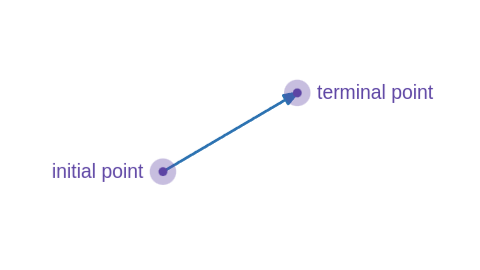

2. algebra (page 61)
2.1. algebraic structures
2.1.1. demonstrate knowledge of why the real numbers and complex numbers are each a field, and that particular rings are not fields(e.g., integers, polynomial rings, matrix rings).
- binary operations
- groups
2.1.2. apply basic properties of real and complex numbers in constructing mathematical arguments (e.g., \(a < b \land c < 0 \implies ac > bc\))
- using properties of the real numbers
- mathematical arguments involving the reals
- properties of the complex numbers
- mathematical arguments involving complex numbers
2.1.3. demonstrate knowledge that the rational numbers and real numbers can be ordered and the complex numbers cannot be ordered, but that any polynomial equation with real coefficients can be solved in the complex field
- ordering
- solvability of polynomials over complex numbers
2.1.4. identify and translate between equivalent forms of algebraic expressions and equations using a variety of techniques(e.g., factoring, applying properties of operations).
- addition, subtraction, and multiplication of polynomials
- factoring polynomials
- factoring binomials
- factoring trinomials
- non-perfect square trinomials
- division of polynomials
- operations with rational expressions
- adding and subtracting rational expressions
- multiplying and dividing rational expressions
- rational expressions and radicals
2.1.5. justify the steps in manipulating algebraic expressions and solving algebraic equations and inequalities.
2.1.6. represent situations and solve problems using algebraic equations and inequalities.
2.2. polynomial equations and inequalities (page 116)
2.2.1. analyze and solve polynomial equations with real coefficients using: the Fundamental Theorem of Algebra, the Rational Root Theorem for polynomials with integer coefficients, the Conjugate Root Theorem for polynomial equations with real coefficients, and the Binomial Theorem.
2.2.2. Prove and use the Factor Theorem and the quadratic formula for real and complex quadratic polynomials
2.2.3. Solve polynomial inequalities
2.3. functions (page 130)
2.3.1. Analyze general properties of functions (i.e., domain and range, one-to-one, onto, inverses, composition, and differences between relations and functions) and apply arithmetic operations on functions
2.3.2. Analyze properties of linear functions (e.g., slope, intercepts) using a variety of representations
2.3.3. Demonstrate knowledge of why graphs of linear inequalities are half planes and be able to apply this fact
2.3.4. Analyze properties of polynomial, rational, radical, and absolute value functions in a variety of ways (e.g., graphing, solving problems)
2.3.5. Analyze properties of exponential and logarithmic functions in a variety of ways (e.g., graphing, solving problems)
2.3.6. Model and solve problems using nonlinear functions
2.4. linear algebra (page 187)
2.4.1. Understand and apply the geometric interpretation and basic operations of vectors in two and three dimensions, including their scalar multiples.
- introduction to vectors
- scalar quantities:: physical quantities that can be represented by a single real number.
- vector quantities:: concepts that require two or more numbers for their representations.

- vector addition::
- rectanular coordinate system in \(R^2\) and \(R^3\)
2.4.2. Prove the basic properties of vectors (e.g., perpendicular vectors have zero dot product)
2.4.3. Understand and apply the basic properties and operations of matrices and determinants (e.g., to determine the solvability of linear systems of equations) (page 202)
- systems of linear equations
2.4.4. Analyze the properties of proportional relationships, lines, linear equations, and their graphs, and the connections between them
2.4.5. Model and solve problems using linear equations, pairs of simultaneous linear equations, and their graphs
3. geometry (page 237)
3.1. plane Euclidean geometry
3.1.1. Apply the Parallel Postulate and its implications and justify its equivalents (e.g., the Alternate Interior Angle Theorem, the angle sum of every triangle is 180 degrees)
3.1.2. Demonstrate knowledge of complementary, supplementary, and vertical angles
3.1.3. Prove theorems, justify steps, and solve problems involving similarity and congruence
3.1.4. Apply and justify properties of triangles (e.g., the Exterior Angle Theorem, concurrence theorems, trigonometric ratios, triangle inequality, Law of Sines, Law of Cosines, the Pythagorean Theorem and its converse)
3.1.5. Apply and justify properties of polygons and circles from an advanced standpoint (e.g., derive the area formulas for regular polygons and circles from the area of a triangle)
3.1.6. Identify and justify the classical constructions (e.g., angle bisector, perpendicular bisector, replicating shapes, regular polygons with 3, 4, 5, 6, and 8 sides)
3.2. coordinate geometry
3.2.1. Use techniques in coordinate geometry to prove geometric theorems
3.2.2. Model and solve mathematical and real-world problems by applying geometric concepts to two-dimensional figures
3.2.3. Translate between the geometric description and the equation for a conic section
3.2.4. Translate between rectangular and polar coordinates and apply polar coordinates and vectors in the plane
3.3. three-dimensional geometry
3.3.1. Demonstrate knowledge of the relationships between lines and planes in three dimensions (e.g., parallel, perpendicular, skew, coplanar lines)
3.3.2. Apply and justify properties of three-dimensional objects (e.g., the volume and surface area formulas for prisms, pyramids, cones, cylinders, spheres)
3.3.3. Model and solve mathematical and real-world problems by applying geometric concepts to three-dimensional figures
3.4. transformational geometry
3.4.1. Demonstrate knowledge of isometries in two- and three-dimensional space (e.g., rotation, translation, reflection), including their basic properties in relation to congruence
3.4.2. Demonstrate knowledge of dilations (e.g., similarity transformations or change in scale factor), including their basic properties in relation to similarity, volume, and area
4. probability and statistics (page 361)
4.1. probability
4.1.1. Prove and apply basic principles of permutations and combinations
4.1.2. Illustrate finite probability using a variety of examples and models (e.g., the fundamental counting principles, sample space)
4.1.3. Use and explain the concepts of conditional probability and independence
4.1.4. Compute and interpret the probability of an outcome, including the probabilities of compound events in a uniform probability model
4.1.5. Use normal, binomial, and exponential distributions to solve and interpret probability problems
4.1.6. Calculate expected values and use them to solve problems and evaluate outcomes of decisions
4.2. statistics (page 400)
4.2.1. Compute and interpret the mean and median of both discrete and continuous distributions
4.2.2. Compute and interpret quartiles, range, interquartile range, and standard deviation of both discrete and continuous distributions
4.2.3. Select and evaluate sampling methods appropriate to a task (e.g., random, systematic, cluster, convenience sampling) and display the results
4.2.4. Apply the method of least squares to linear regression
4.2.5. Apply the chi-square test
4.2.6. Interpret scatter plots for bivariate data to investigate patterns of association between two quantities (e.g., correlation), including the use of linear models
4.2.7. Interpret data on a single count or measurement variable presented in a variety of formats (e.g., dot plots, histograms, box plots)
4.2.8. Demonstrate knowledge of P-values and hypothesis testing
4.2.9. Demonstrate knowledge of confidence intervals
5. calculus (page 461)
5.1. trigonometry
5.1.1. Prove that the Pythagorean Theorem is equivalent to the trigonometric identity \(sin^2x + cos^2x = 1\) and that this identity leads to \(1 + tan^2x = sec^2x\) and \(1 + cot^2x = csc^2x\)
5.1.2. Prove and apply the sine, cosine, and tangent sum formulas for all real values
5.1.3. Analyze properties of trigonometric functions in a variety of ways (e.g., graphing and solving problems, using the unit circle)
5.1.4. Apply the definitions and properties of inverse trigonometric functions (i.e., arcsin, arccos, and arctan)
5.1.5. Apply polar representations of complex numbers (e.g., DeMoivre's Theorem)
5.1.6. Model periodic phenomena with periodic functions
5.1.7. Recognize equivalent identities, including applications of the half-angle and double-angle formulas for sines and cosines
5.2. limits and continuity (page 507)
5.2.1. Derive basic properties of limits and continuity, including the Sum, Difference, Product, Constant Multiple, and Quotient Rules, using the formal definition of a limit
5.2.2. Show that a polynomial function is continuous at a point
5.2.3. Apply the intermediate value theorem, using the geometric implications of contin
5.3. derivatives and applications (page 529)
5.3.1. Derive the rules of differentiation for polynomial, trigonometric, and logarithmic functions using the formal definition of derivative
5.3.2. Interpret the concept of derivative geometrically, numerically, and analytically (i.e., slope of the tangent, limit of difference quotients, extrema, Newton's method, and instantaneous rate of change)
5.3.3. Interpret both continuous and differentiable functions geometrically and analytically and apply Rolle's theorem, the mean value theorem, and L'Hôpital's rule
5.3.4. Use the derivative to solve rectilinear motion, related rate, and optimization problems
5.3.5. Use the derivative to analyze functions and planar curves (e.g., maxima, minima, inflection points, concavity)
5.3.6. Solve separable first-order differential equations and apply them to growth and decay problems
5.4. integrals and applications (page 582)
5.4.1. Derive definite integrals of standard algebraic functions using the formal definition of integral
5.4.2. Interpret the concept of a definite integral geometrically, numerically, and analytically (e.g., limit of Riemann sums)
5.4.3. Prove the fundamental theorem of calculus, and use it to interpret definite integrals as antiderivatives
5.4.4. Apply the concept of integrals to compute the length of curves and the areas and volumes of geometric figures
5.5. sequences and series (page 613)
5.5.1. Derive and apply the formulas for the sums of finite arithmetic series and finite and infinite geometric series (e.g., express repeating decimals as a rational number)
5.5.2. Determine convergence of a given sequence or series using standard techniques (e.g., ratio, comparison, integral tests)
5.5.3. Calculate Taylor series and Taylor polynomials of basic functions